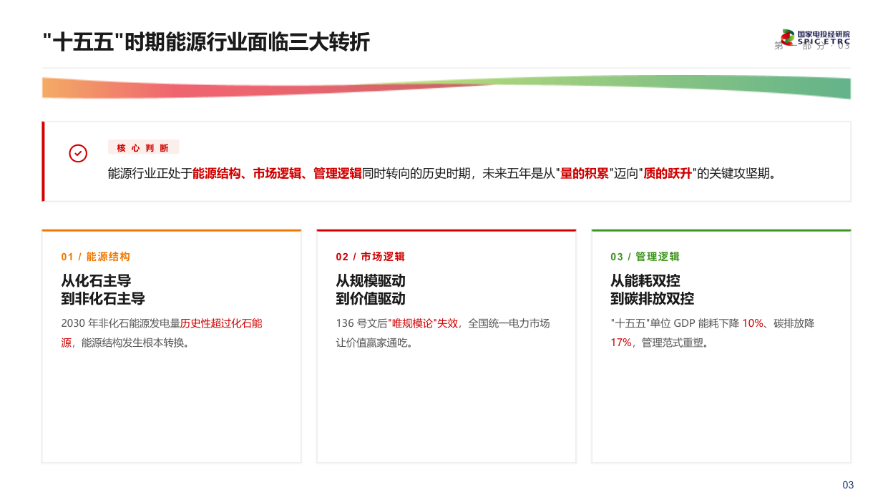

业务工具化（三）演示文稿智能体

效 率 工 具
把演示文稿"重复装配"的工作交给 AI——从研究报告/大纲直接生成符合国家电投 VI 规范的成稿 PPT，让研究员把时间还给研究本身。
演示文稿智能体
SPIC-PPT
- 覆盖大纲 → 装配 → 导出 PDF 全链路工作流
- 10 种典型版式 + 集团固定款红绿飘带内置
- 40-60 分钟完成 20-30 页标准汇报
核 心 能 力
CAPABILITY
- 从 docx / pptx / pdf 自动提取可复用图片
- 党政原文自动从权威源抓取并逐字校验
- 集团 VI 规范+经研院惯例内置约束
▎ 装 配 案 例
基于 v4.2 设计语言自动生成

仓库地址：
github.com/ymb023/SPIC-PPT · 已沉淀为 Claude Code skill 可一键调用